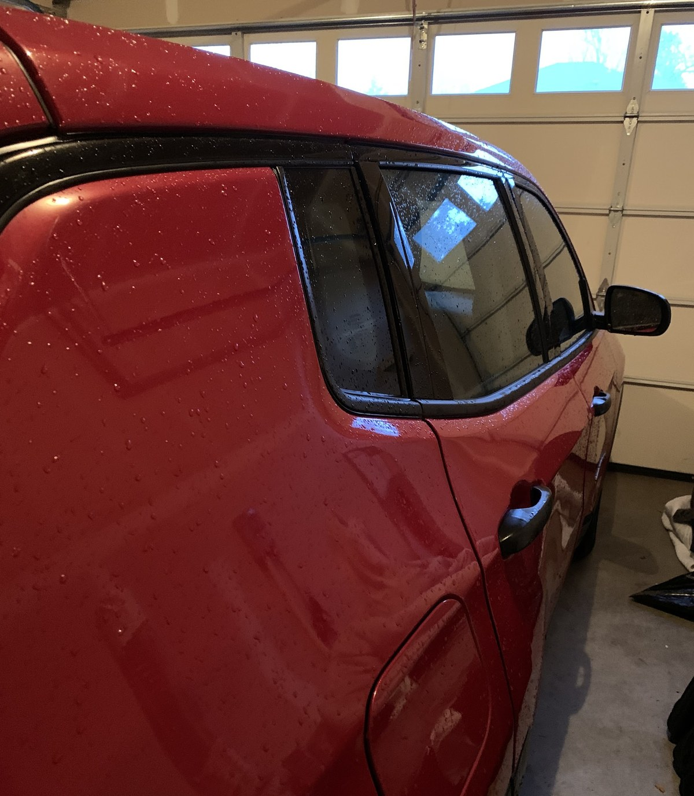
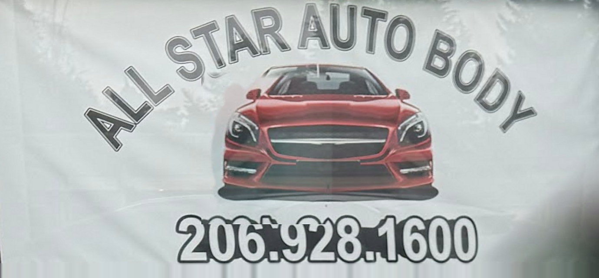
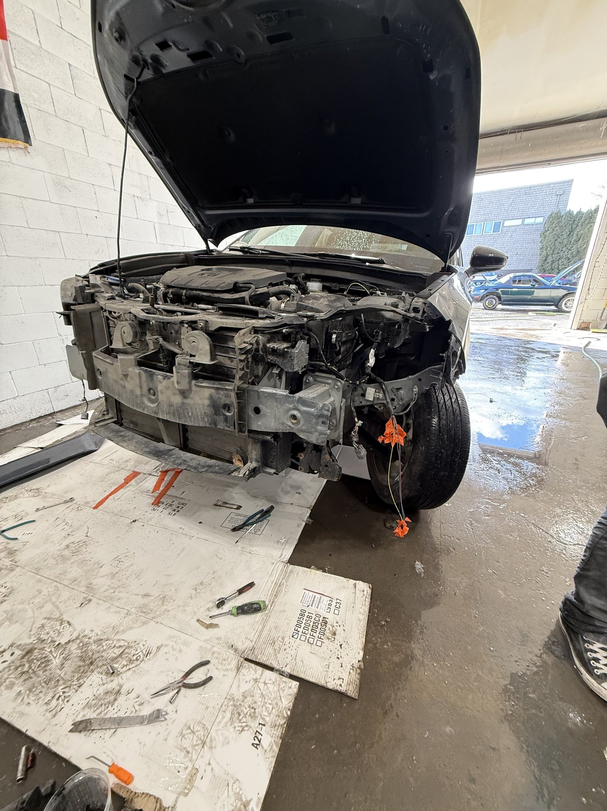
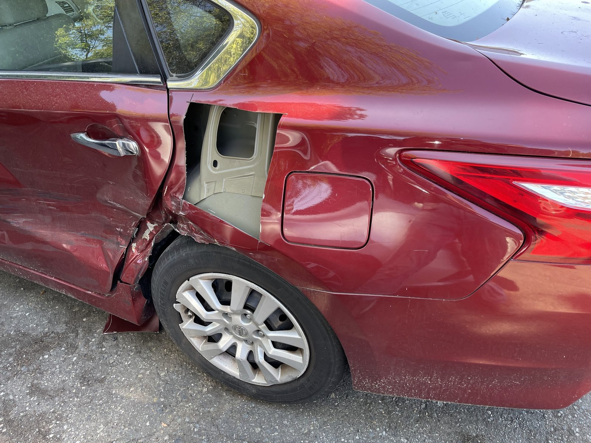
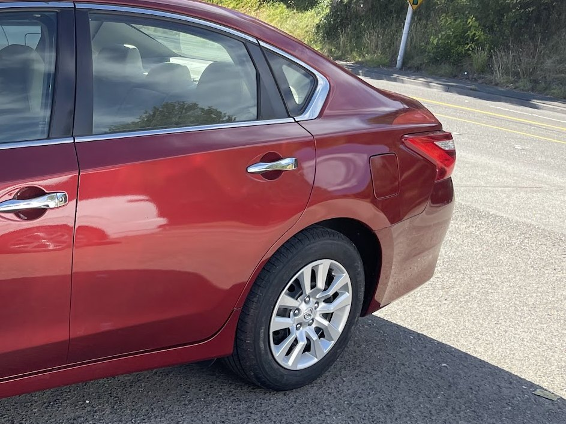
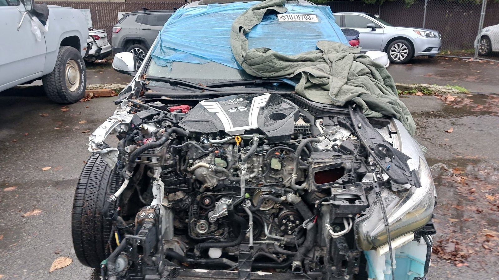
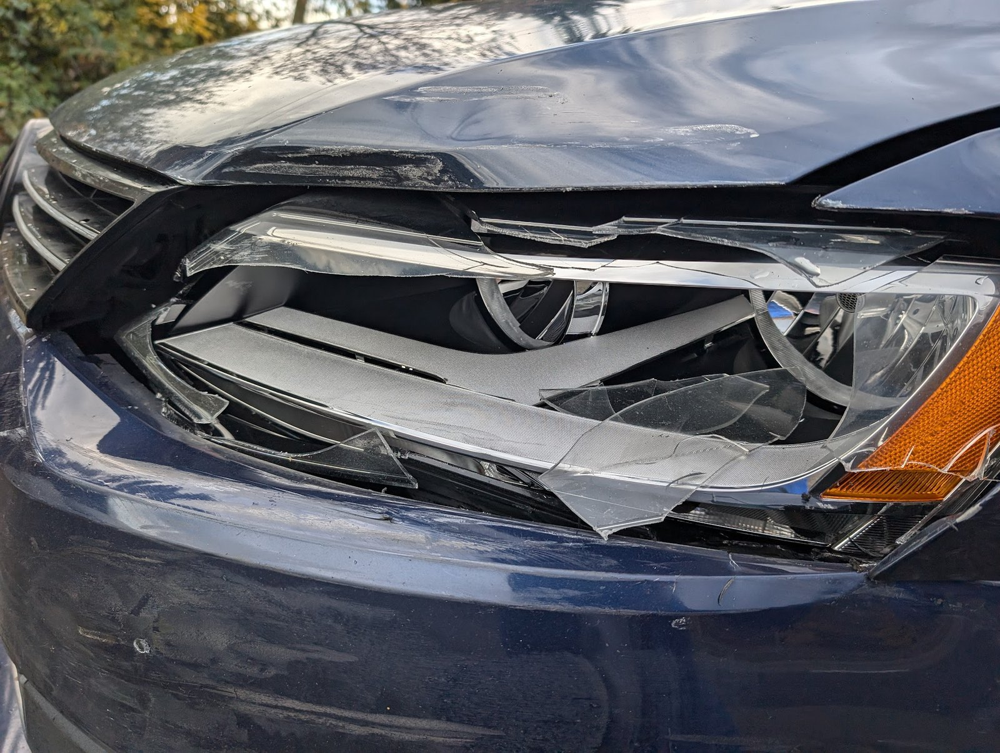
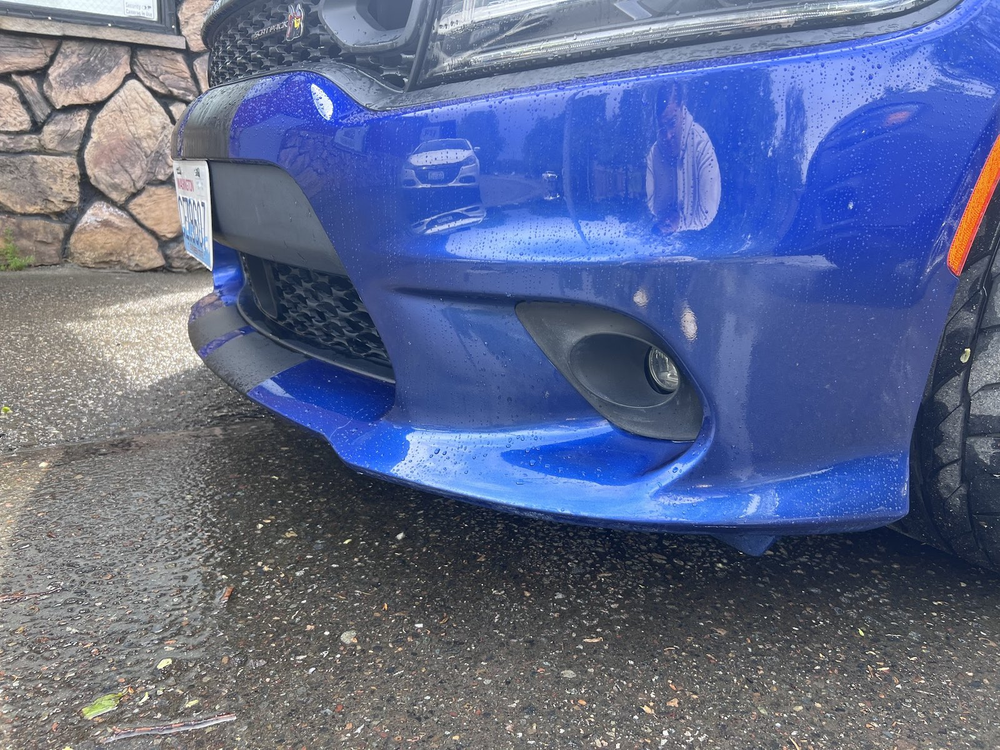
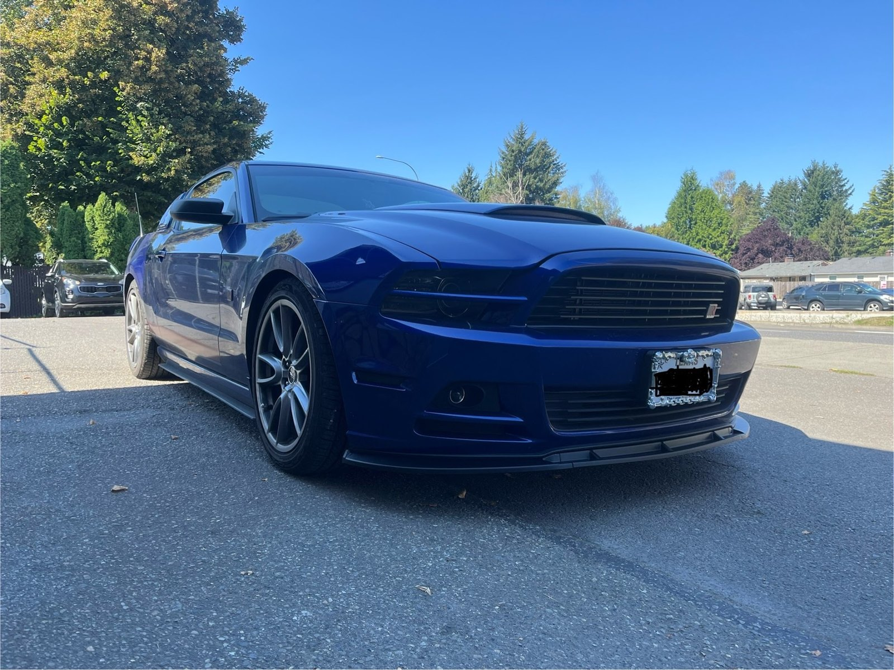
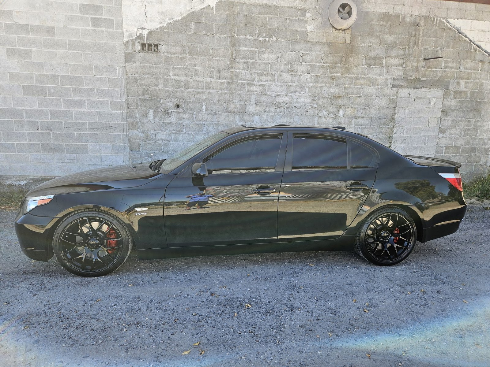

Hit hard, not written off
Cars turn up on their lot with the front clip gone and the engine sitting in the open air.
- Front ends taken off at the rails
- Rear quarter panels torn open to the inner structure
- Crushed rockers and folded door skins


When to bring it in
checking hours…
2906 E Main Ave, Puyallup, WA 98372
Open in Maps ↗
From their own photos
All Star photograph their own work, job by job, and post it. Everything below is something you can see in those pictures. Tap a heading.
Hit hard, not written off
Cars turn up on their lot with the front clip gone and the engine sitting in the open air.
Guide coat to gloss
Their bay shots show panels in yellow guide coat and grey primer, then the same panels back in colour.
The parking-lot stuff too
Not every car on their camera roll was in a wreck. Plenty just got creased.
On the bay floor
The work photographs badly halfway through, and they post it anyway.

The line on their own sign
Look at the banner over the door: a single red car, wrecked down the left of the picture and perfect down the right, split by one straight line. Here is that line on a car they actually fixed — same red Nissan, same driver's side, before and after. Drag it.


Before AfterDrag the line.
Both frames — All Star's own photos
Their own camera roll





Who's in the barn
That is not a figure of speech.
Scroll their photographs and the same frame keeps coming round: a finished car parked against the stone wall at 2906 East Main with a fat red bow across the hood and ribbons down the fenders. A Mazda. A Range Rover. Whoever's turn it was that week.
The shop is the red barn-sided building on East Main — stone veneer along the bottom, one banner over the door with a wrecked car on the left of it and a finished one on the right. Behind that is a plain concrete-block bay: a car up on the floor in guide coat, tools left where they were set down. Nothing about it is a showroom. The work is the showroom, which is presumably why they photograph all of it.
Straight off their listing
Getting it looked at
The number is printed across the bottom of the banner out front. Ring it before you drive over so someone's there to walk round the car with you.
Pull up outside and point at it. If the car isn't driveable, photos on your phone will do to start with.
They'll photograph it going in — the same way they photograph everything else — and you'll see it again on the other side of that line.